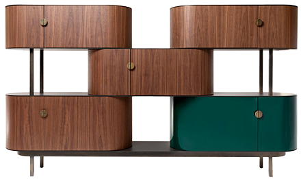

Product & Interior
Design
Le SwissDesignFair a été créé en 1995 pour mettre en valeur et promouvoir le design et l’architecture d’intérieur suisses.
La créativité formelle et ingénieurale des produits, la qualité des matériaux et la finesse des réalisations en font un Salon à la renommée mondiale.
Durant six jours, le SwissDesignFair accueille des grandes marques, des industriels, des éditeurs de meubles et des créateurs indépendants.



- 6 jours
- 150 exposants
- 280 marques
- 1 portrait - rétrospective
- 1 exposition thématique